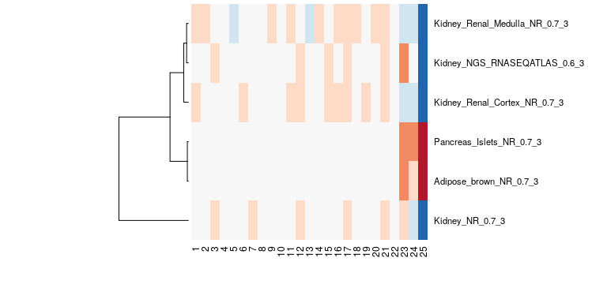

BioQC is a is a R/Bioconductor package to detect tissue heterogeneity in gene expression data. Tissue heterogeneity is a consequence of unintended profiling of cells of other origins than the tissue of interest and can have both technical (e.g. imperfect disection) or biological (e.g. immune infiltration) reasons.
We demonstrated that tissue heterogeneity is prevalent in 5-15% of all gene expression studies. Ignoring tissue heterogeneity reduces statistical power of data analysis and can, in the worst case, invalidate the conclusions of a study. Therefore, we propose applying BioQC as a routine step in every gene-expression analysis pipeline.
The BioQC method is described in
Zhang, Jitao David, Klas Hatje, Gregor Sturm, Clemens Broger, Martin Ebeling, Martine Burtin, Fabiola Terzi, Silvia Ines Pomposiello, and Laura Badi. “Detect Tissue Heterogeneity in Gene Expression Data with BioQC.” BMC Genomics 18 (2017): 277. doi:10.1186/s12864-017-3661-2).
Basic Usage
BioQC implements a computationally efficient Wilcoxon-Mann-Whitney test for testing for enrichment of tissue signatures. A database of 150 tissue signatures derived from large-scale transcriptomics studies is shipped with the BioQC package.
To apply BioQC to a genes x samples gene expression matrix, run:
library(BioQC)
# load the tissue signatures
gmtFile <- system.file("extdata/exp.tissuemark.affy.roche.symbols.gmt",
package="BioQC")
gmt <- readGmt(gmtFile)
# perform BioQC enrichment test on a gene expression matrix
bioqc_res = wmwTest(expr_mat, gmt)
bioqc_scores = absLog10p(bioqc_res)The following figure shows the BioQC scores from the kidney example visualized as heatmap. We note that in samples 23-25 adipose and pancreas signatures have been detected, hinting at a containation with those tissues. For this dataset, we could validate the contamination with qPCR.

For a more detailed example explaining how to use other data structures or custom signatures see
For advanced usages, check out:
For benchmarks and details about the algorithm, see:
Installation
Bioconductor
BioQC is available from Bioconductor.
You can install it using
if (!requireNamespace("BiocManager", quietly = TRUE))
install.packages("BiocManager")
BiocManager::install("BioQC")Bioconda
Alternatively, you can use the conda package manager.
Make sure you set-up the Bioconda channel correctly. The order of the channels is important!
-
(Optional) Create and activate an environment for BioQC
-
Install the
bioconductor-bioqcpackage in your current environment
From Github
The easiest way to install the development version from GitHub is using the remotes package:
install.packages("remotes")
remotes::install_github("accio/BioQC")Contact
If you have questions regarding BioQC or want to report a bug, please use the issue tracker.
Alternatively you can reach out to Jitao David Zhang via e-mail.